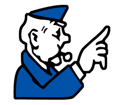

Chapter 4 - Networks and the effects of using them
Sub-chapter 4.2 - Networks issues and communication

When users access the internet, certain aspects of it are best avoided. Sadly however, not all of these issues are obvious.

Should the internet be policed?
The question that always somehow manages to get into arguments both online and face to face; should the internet be policed? Here are some common arguments for;
It would prevent children and the elderly (and other vulnerable groups) from being subjected to undesirable websites
It would prevent searches results that would be illegal in reality (eg. how to make a molotov cocktail)
It would help stop incorrect/invalid information from being published on websites
And also some arguments against;
Policing the internet would be costly
Enforcing rules and regulations will be difficult on a global scale
These laws may be against the freedom of speech and information